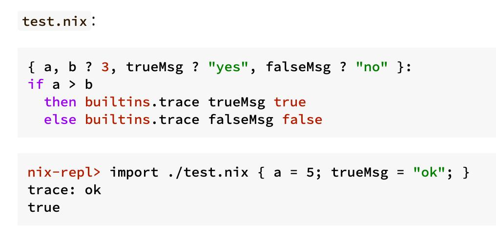

Posts with tag "tutorials"
Дизайнеры Nix – наркоманы или гении?
posted on 2026-01-28

На своем ноутбуке с Mac OS я помимо Homebrew использую Nix для того, чтобы ставить пакеты. Почему я когда-то заинтересовался Nix? Так это потому, что в нем интересная концепция поколений, когда ты можешь безопасно попробовать какую-нибудь программу, а потом откатить все изменения в системе, которые были сделаны при установке этой программы.
Более того, Nix даже задуман так, что в нем есть специальный способ установить программу, не меняя системного окружения вообще. То есть ты запускаешь специальный Shell, в котором какая-нибудь программа доступна, а при выходе из этого Shell она исчезает. Ну и вообще концепция Nix очень похожа на блокчейн. То есть там каждый пакет зависит от других пакетов.
И прикольно то, что одновременно в системе могут быть библиотеки и программы, использующие разные версии библиотек. Например, какой-нибудь Postgres, который использует Lipsy одной версии, не знаю, ffmpeg, которому нужно Lipsy другой версии. И они спокойно могут сосуществовать, потому что Nix собирает их окружение с помощью симлинков.
Так вот, недавно я нашел прекрасную серию статей про то, как устроен Nix, его язык описания пакетов и все такое прочее. Дело в том, что раньше я пользовался Nix на самом базовом уровне - просто устанавливал пакеты и пользовался ими. А тут мне попалась эта серия статей, и я решил разобраться подробнее, как же там внутри все устроено, и может быть, мне тоже нужно описывать свои пакеты, модули Nix, так, чтобы пользователи Nix могли устанавливать Common Lisp библиотеки прямо из https://ultralisp.org. А это, согласитесь, было бы прикольно - сделать так, чтобы UltraLisp имел свой Nix Channel и библиотеки для можно было бы ставить без использования QuickLisp.
Ну так вот, начал я читать эту серию статей, и там дошел сейчас до момента, где описывается язык, на котором декларируется описание пакетов. Это полноценный язык программирования, но, господи, за что? Там такой синтаксис наркоманский! Он, с одной стороны, иногда выглядит прикольно, но, с другой стороны, иногда думаешь, блин, что, что курили создатели этого языка!?
Вот, например, на скриншоте к этому посту показано содержимое одного файла, и в нем код который определяет функцию. И это очень не похоже на другие языки программирования . Более того, ниже под содержимым файла показан REPL, где происходит вообще странное - мы как бы делаем импорт, и одновременно вызываем функцию в той же строке! То есть импорт возвращает нам объект функции, в которой сразу применяются аргументы, и получается какой-то результат. Ну согласитесь, это какое-то наркоманство!
Не знаю, буду пока дальше изучать, может быть, в этом есть какой-то более глубинный смысл, но пока что выглядит странновато. Если у вас есть опыт использования NIX, и вы познали все его тайны, или наоборот хотели бы копнуть глубже - пишите в комментариях, буду рад пообщаться.
This blog covers learning, news, ai, automation, voice, projects, holism, zerocoder, python, codeassistant, aider, cursor, llm, project, i18n, commonlisp, poftheday, closed, tips, seo, telegram, bot, прототип, smarthome, yandexcloud, logging, ideas, experiment, software, thoughts, programming, hackathon, mtstruetech, robotics, salebot, bots, notes, emacs, lisp, failures, infrastructure, lispworks, life, идеи, mcp, problems, sql, nix, ultralisp, tutorials, yandex, cloud
Created with passion by 40Ants